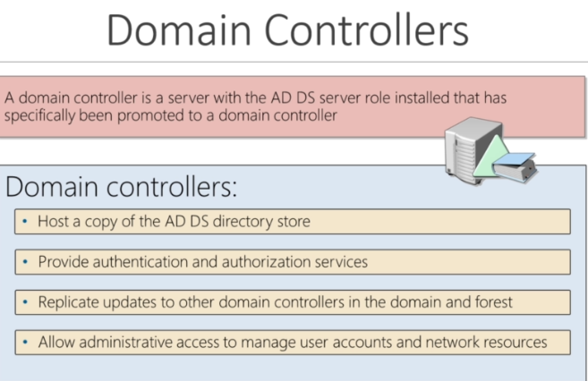
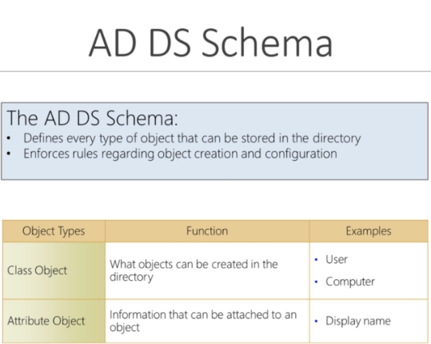

What is Active Directory??
-Directory service developed by Microsoft to manage windows domain networks
-Stores information related to objects, such as computers, users, printers, etc
-->Think about it as a phone book for windows
-Authenticates using Kerberos tickets
-->Non-Windows devices, such as Linux machines, firewalls, etc can also authenticate to Active Directory via RADIUS or LDAP
ex:
you log to your computer with username and password in company but maybe another computer in different building and you use the same username and password and it's because using something called active directory so you can have just one username and password and you can authenticate around the network using these credentials and this authentication is going to use Kerberos tickets
Why Active Directory?
-->Active Directory is the most commonly used identity management service in the world
-->95% of fortune 1000 companies implement the service in their networks
-->Can be exploited without ever attacking patchable exploits
--Instead, we abuse features, trusts, components and more
---------------------------------------------------------------------------------------------
Physical AD Components
-->when you set up Active Directory you have what is called a domain controller, it host your phone book, it has all the information on the users, computers, printers are in the network, it's providing authentication and authorization
-->when we attack an internal network it's very very bad, if we can compromise your domain controller we can compromise the whole network potentially

Ntds.dit file-->this file is very sensitive, it contains password hashes for all users in that domain

-------------------------------------------------------------------------------
Logical AD Components



Summary:
-->so we have domains and domains are used to group and manage objects in an organization, if you have multiple domains we called them tree you might have a parent domain and children domain and when you have multiple sets of trees you strarting to build out a forest , now inside these domains, trees and forests are what called Ous and Ous consists of these objects and across forests and across domains we have trusts, and trusts can be directional meaning that one domain trusts another and can be transitive meaning one domain trusts another domain and then trusts everything else that domain also trusts
----------------------------------------------------------------------------